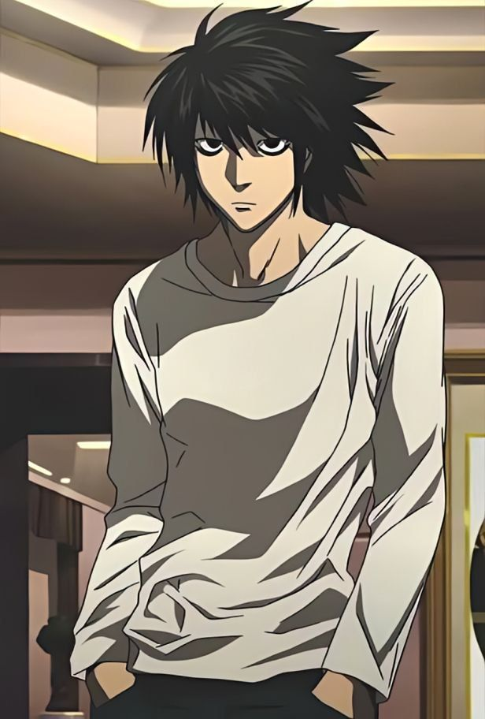

L Lawliet (Ryuuzaki, Hideki Ryuga, Eraldo Coil, Deneuve)₊˚⊹ ᰔ
L Lawliet, conhecido mononimamente como L, é um personagem fictício e o principal antagonista da série de mangá Death Note, criada por Tsugumi Ohba e Takeshi Obata.

Ficha Técnica
Habilidades
Manias
Personalidade
Inteligência de nível genial
Agachar-se ao invés de sentar
Introvertido
dedução lógica